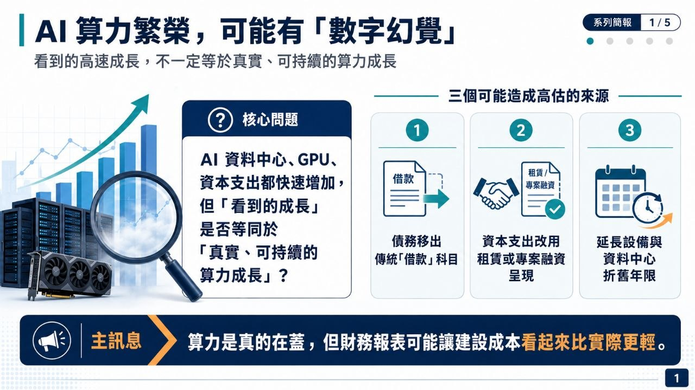
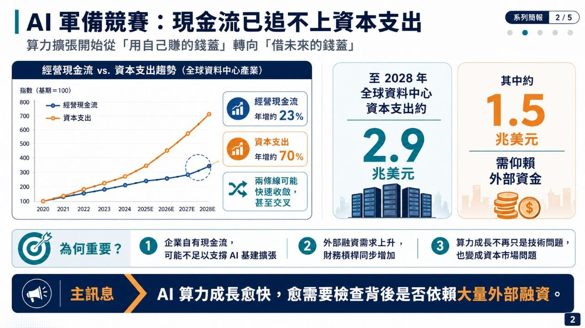
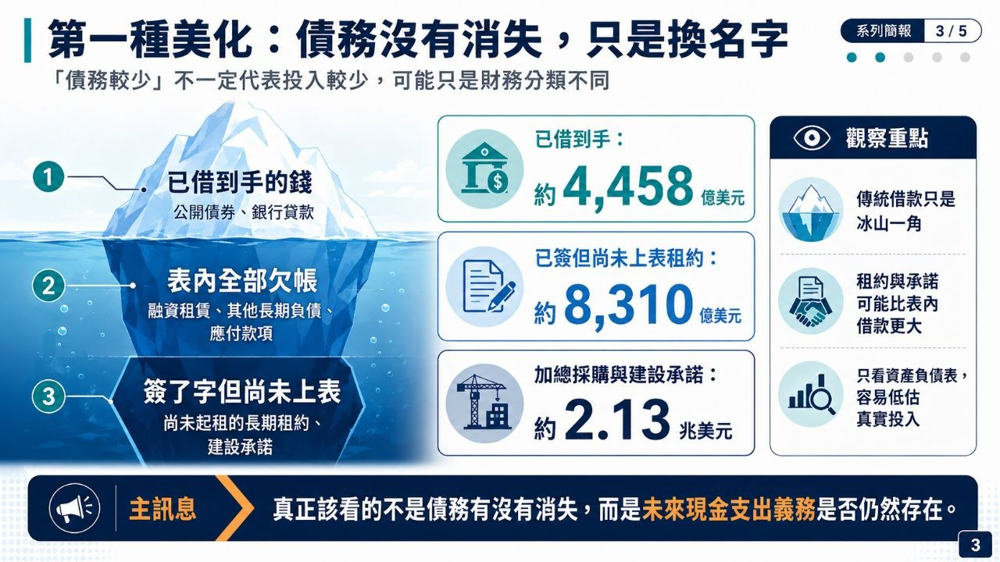
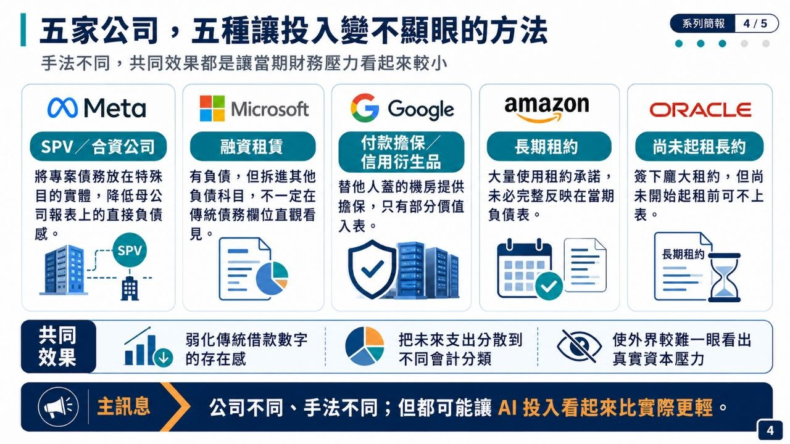
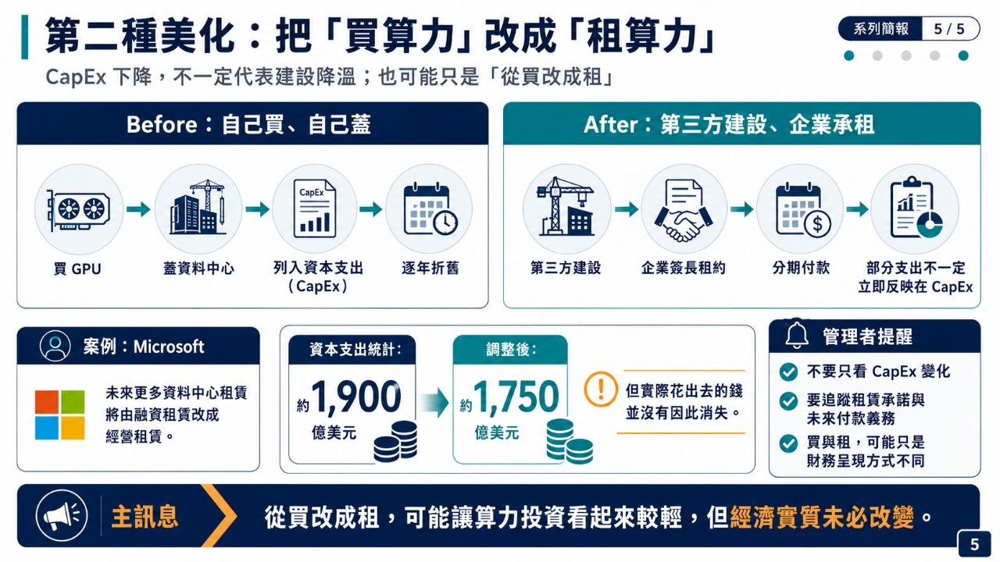
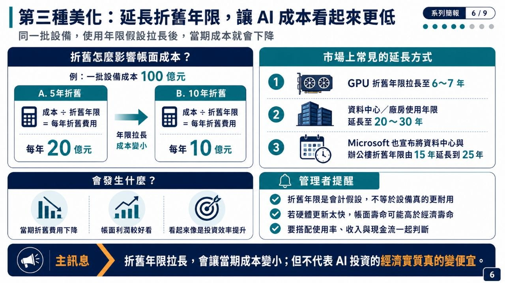
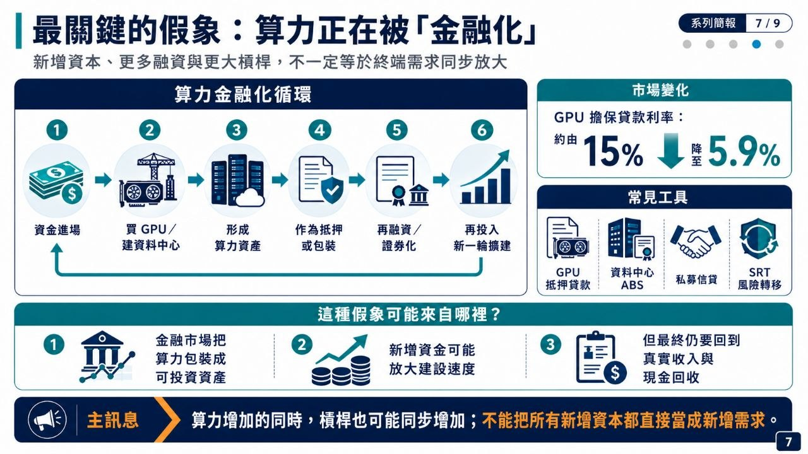
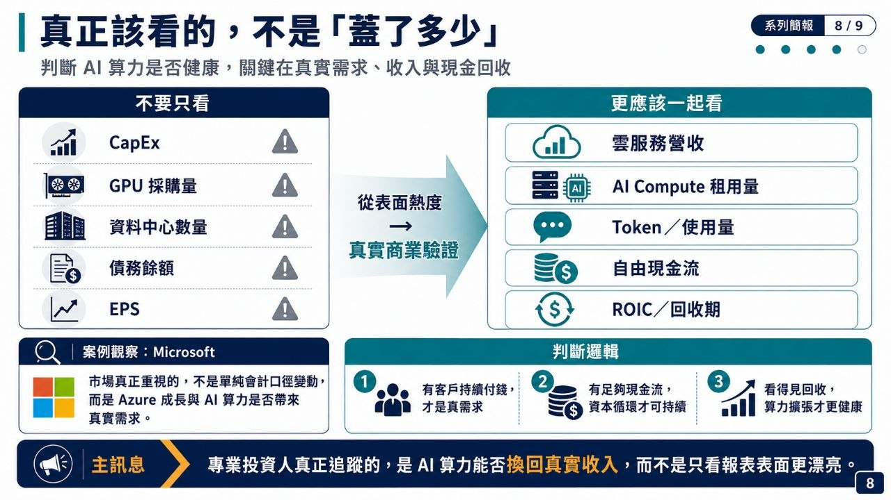
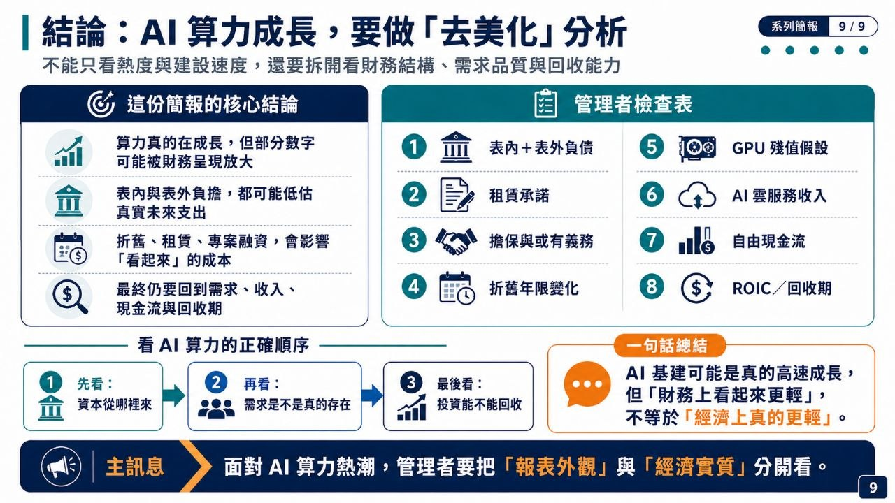

「消失」的兆元債務：資料中心影子借貸、GPU 金融化與次貸風險
這支影片指出，AI 資料中心建設正在把科技巨頭從「輕資產、現金流充沛的軟體公司」，推向「高資本開支、高長期承諾、需要外部融資的基礎設施公司」；債務雖可透過 SPV、租賃與擔保移出表內，但風險並沒有消失，只是被金融化、切分並轉移。
重點摘要
重點摘要圖卡









- AI 基礎設施讓五大巨頭資本結構改變：Amazon、Microsoft、Google、Meta、Oracle 過去靠高現金流與股票回購支撐估值；現在大量資金轉向 GPU、電力、土地與資料中心。
- 公開債快速增加，但仍不夠用：影片提到五大巨頭 2026 年截至 7 月底公司債發行已接近 2,000 億美元，且回購金額大幅下降，反映現金流壓力與市場吸收能力限制。
- 「影子借貸」讓負債不那麼顯眼：透過 SPV、合資公司、融資租賃、長期租約、殘值擔保等安排，債務不一定直接進入母公司資產負債表，但還款能力仍常常依賴巨頭未來現金流。
- GPU 開始被金融化：華爾街把 GPU、推理晶片、資料中心租約與未來算力收入包裝成可投資資產，相關貸款利率與評級快速改善，但殘值與利用率假設成為新風險來源。
- AI 版次貸尚未成立，但風險正在累積：嘉賓認為目前規模、銀行槓桿與監管環境不同於 2008；但私募信貸、保險、退休金與長期現金流假設，是值得追蹤的脆弱點。
關鍵數字／觀察
- 影片提到美國五大科技巨頭資料中心相關債務總量達 1.65 兆美元等級。
- 五家公司股票回購從 2021 年第四季合計 480 億美元，降至 2026 年第一季約 46 億美元，四年多減少約九成。
- Epoch AI 推演：經營現金流年增約 23%，資本開支年增約 70%，若趨勢延續，兩條線可能在 2026 年第三季交叉。
- 摩根士丹利估算：2028 年前全球資料中心資本開支約 2.9 兆美元，其中約 1.5 兆美元需要外部資本。
- Meta Hyperion 案例：專案融資約 272.9 億美元，但 Meta 表內僅呈現約 23.7 億美元投資，並透過租約與殘值擔保承擔實質風險。
給企業與管理者的啟發
- AI 導入不能只看模型能力，也要看資本承諾：算力、資料中心與長期租約會把技術決策變成財務決策。
- 表外不等於無風險：只要現金流、擔保或長約仍回到母公司，風險就只是換了一種呈現方式。
- GPU 的「殘值」是新關鍵假設：如果硬體汰換速度、模型效率或需求成長不如預期，資產抵押價值會快速重估。
- 真正要追蹤的是 AI 收入與使用量：會計口徑本身不是核心，關鍵在這些投資是否換回可持續收入、利用率與 ROI。
- 金融風險可能沿著供應鏈轉移：資料中心、雲端服務商、私募信貸、保險與退休金之間的風險傳導，需要比過去更細的治理視角。
風險提醒
本內容為影片逐字稿與公開資訊整理，不構成投資建議。涉及公司債、私募信貸、資料中心融資與 GPU 抵押貸款等金融產品時，仍需回到正式財報、招股說明書、評級報告與合約條件判讀。
影片說明欄重點與連結
這集《矽谷 101》拆解 AI 資料中心融資如何從公開公司債，延伸到 SPV、合資公司、融資租賃、GPU 抵押貸款與私募信貸；核心問題是：科技巨頭能否用未來 AI 現金流，支撐今天高速擴張的資本開支。
原始影片：https://www.youtube.com/watch?v=89ThCi5qq-A